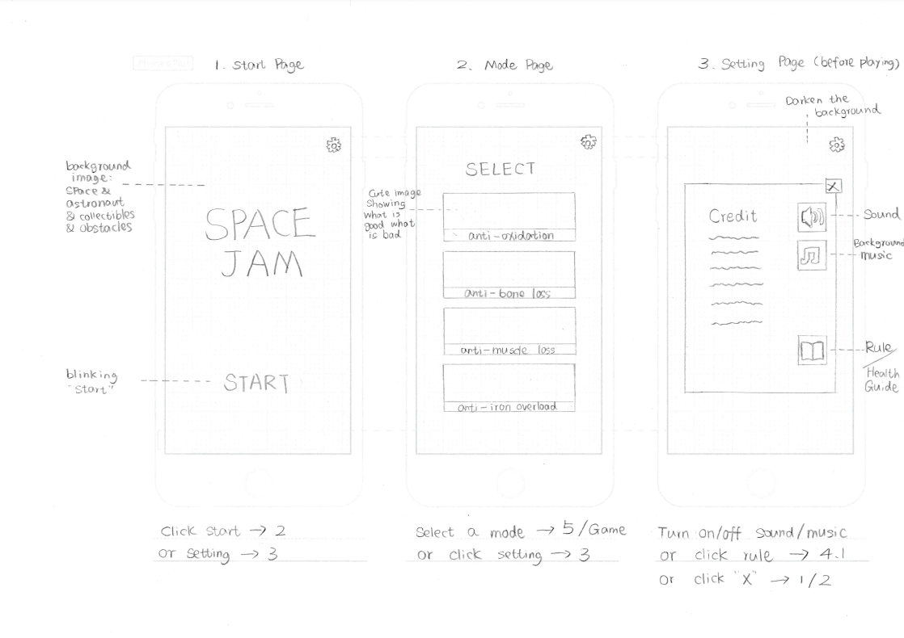
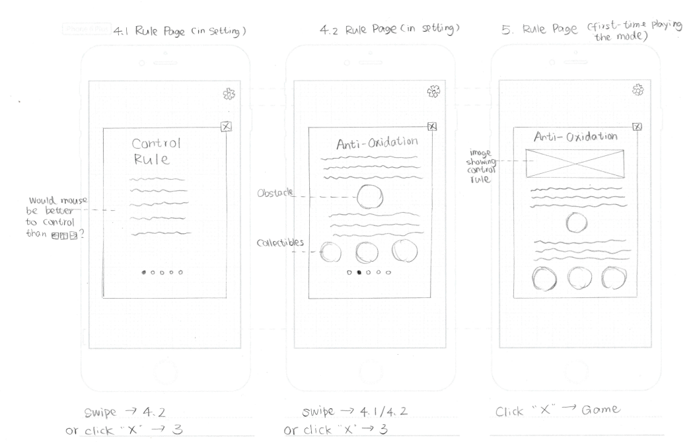
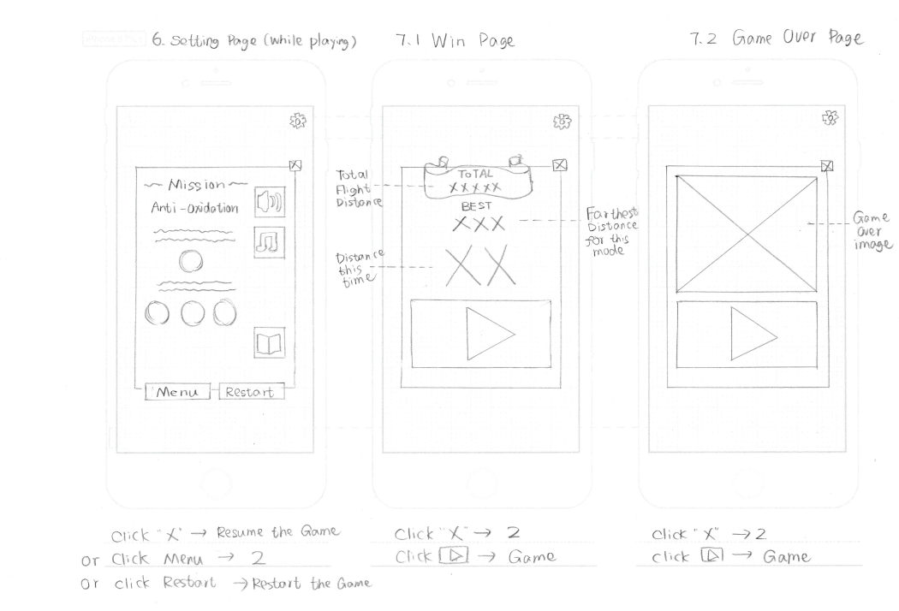

2017, Educational game for kids
In 2017, a game design project was done to participate in the Canada Aviation and Space Museum for children's space nutrition education. The user-centred design approach was taken from the beginning of the project.
Intro
SpaceJam is an educational game developed to spark children's interest in space travel and encourage them to learn more about the International Space Station. SpaceJam presents the journey and potential obstacles faced by a spaceship taking off from Earth to the International Space Station, with a particular focus on astronaut physical health and space flight nutrition (ref: NASA link1, link2). The game was designed for a younger demographic, as the information content that is being taught is not highly complex and will likely only be new to children aged from 10 to 14 years old.
The goal was to incorporate game features that make the game both engaging and educational for the player. Ultimately, the game should motivate the player to want to learn more about the subject. In this study, we compare the learning outcomes of playing SpaceJam and reading a text about the same subject.
The study is designed to answer the question of whether or not playing SpaceJam results in better learning outcomes than reading text media about astronauts’ health during space travel. This study compares the pre-test and post-test of two groups who learned the same information using different media. Additionally, surveys and observations were collected during the study to evaluate the usability of the game and apply the required changes. The user study aimed to measure the effectiveness of SpaceJam as an educational tool.
Game Design
Plot
The plot of this game will be the spaceship travelling around the solar system. While playing, the main character of the game who is the astronaut will make a journey from a starting point to an end point. The travel starting point and end point will vary based on the level that the user has reached (current status of travelling context is either between planets or earth to the ISS).
Goals
The goal of the game mainly consists of two parts. First, engaging the user into a user-friendly environment where they would have to keep the astronaut’s body condition at a healthy state as well as making sure the the spaceship does not run out of fuel. The goal of this game is to have young users intrigued about how astronauts keep their healthy body condition and the requirements for their space travel.
Interface & Graphical Aesthetics
The game’s interface will be divided into three sections. There would be status bars positioned on the top-left corner of the screen such that the user can always be informed about his or her status. The status bars consist of the fuel level of the spaceship as well as the health level of the astronaut. We are currently thinking of adding a third status bar containing the astronaut’s eating-exercising status but given the fact that we might provide the user with excessive information, we will discuss and analyze based on feedback and decide on the next phase of our project how we will proceed with this feature.
The game will be presented in 2D platform and its graphical aesthetics will follow the cartoonish style of design. In order to provide players with fun, playful, and entertaining experience while playing the game, we choose to go with cartoonish style and colorful palettes to design Space Jam. This style of design will be appropriate for our target audience as well. The vivid sound effects and vibrant music will be added to complement the general atmosphere, such that enhancing player's overall experience as a result.
 |
 |
 |
Method
The methodology used in SpaceJam’s user study workshop focused on determining whether individuals learn space nutrition knowledge better by playing SpaceJam rather than using a conventional medium (reading related text). There was a total of ten participants recruited to participate our study (5 treatment group and 5 control group). A between-group study was designed to measure the score change from either playing the game or reading related materials.
This was done by using observations, questionnaire and interviews. We observed when users were playing SpaceJam or when users were reading the related text. In addition, text and nominal and ordinal data were collected through pre and post-questionnaires. Post-study interviews were also conducted to ask about the gameplay or the article.
Key findings
- No significant difference found in educational impact between game and reading related materials.
- However, gameplay provided users higher usability, positive user experience, and higher engagement.
Results and findings
Regarding the improvement of average score, the control group showed a lower average performance in the pre-test and scored a slightly higher improvement of average score (mean: 5.4, SD:3.21) than the treatment group (mean:5.2, SD:1.79). An unpaired t-test was performed to find the differences between the two groups. The result concluded that there were no significant differences found in the improvement after their learning through two media (p > .05, df=8).
The overall goal of the study was to measure the effectiveness of SpaceJam as an educational game to improve knowledge about astronaut health challenges during space travel. The pretest and posttest data were collected to measure the learning outcomes of SpaceJam compared to a conventional learning method. On the other hand, survey and observation data were collected to test the usability of SpaceJam. Consequently, this ensures that learning outcomes are not affected by poor game design and that the different game features motivate them to learn.
Educational Outcomes
The learning method used did not have a significant effect on the level of knowledge acquired in the post-test results. Both participants in the control group and the treatment group showed a significant improvement in knowledge about astronauts’ health. The overall results showed a similar pretest to posttest gain in both groups. The control group scored a slightly higher average performance improvement (5.4) than the treatment group (5.2). The difference in performance improvement between the two groups was due to the different levels of knowledge participants had before taking the test. Participants in the treatment group had more knowledge about the subject before taking the test, which resulted in a lower improvement compared to the control group who did not have previous knowledge about the subject. However, regardless of previous knowledge, participants from the two groups had the same results in their post-test. This shows that SpaceJam was effective in delivering the same information the text provided for the control group. The results showed that text was easy to understand and effective in communicating information concerning astronauts’ health. However, one of the interesting results from the control group was the participants did not experience any increase in knowledge after reading the text. The same participant reported that reading is a boring medium to learn, and was more interested in trying the game. Overall, participants preferred more visual representations of information such as educational games, videos, and infographics. Therefore, the unexciting nature of reading texts can have a negative effect on the learning outcomes of this medium.
Game Usability
Overall, SpaceJam was reported by participants to be fun, engaging, and enjoyable. Participants found that the different game rules motivated them to focus on what to collect and what to avoid in order to keep the astronaut in a healthy state. All participants loved the graphics in the game and found them to be effective in communicating different health requirements for astronauts. However, a significant number of participants reported having problems with game feedback. The lack of score or timing features to indicate the state of the game confused participants about when the game was going to end and how they were doing. Additionally, many participants did not notice the health bar on the screen, due to its location on the lower left side of the screen. Therefore, the health bar was replaced by a bigger health bar to make sure can see it while playing. Moreover, to give players more feedback on their actions while playing, a reaction sound was added when collecting the right elements, and the spaceship turned red when collecting the wrong elements. Additionally, a score count was added to the screen for players to get feedback on their overall performance while playing, and motivate players to replay the game and break their record. With this repetition, players are more likely to recall the information learned while playing, which will increase the overall learning outcomes.